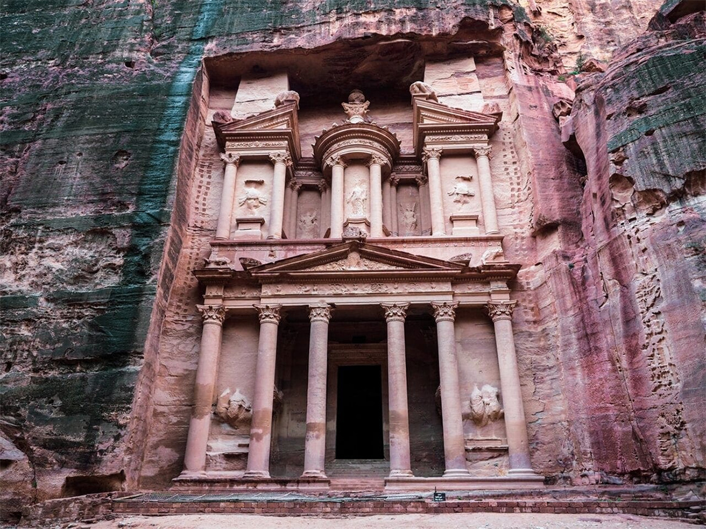

Petra
Różowe miasto Nabatejczyków, wykute w skale przez starożytnych budowniczych.

Historia i znaczenie
Petra była stolicą królestwa Nabatejczyków, starożytnego ludu arabskiego. Miasto zostało wykute w skałach około 312 roku p.n.e. i było ważnym ośrodkiem handlowym na szlaku karawanowym.
Interesujące fakty:
- Znana również jako "Różowe Miasto" ze względu na kolor skał
- Odkryta dla Europy w 1812 roku przez Johanna Burckhardta
- UNESCO wpisało ją na listę światowego dziedzictwa w 1985 roku
- The Treasury (Skarbiec) to najsłynniejsza budowla Petry
Informacje techniczne:
| Lokalizacja: | Jordania |
| Wysokość: | Do 45 metrów |
| Okres budowy: | 312 p.n.e. - 106 n.e. |
| Materiał: | Wykute w skale piaskowca |